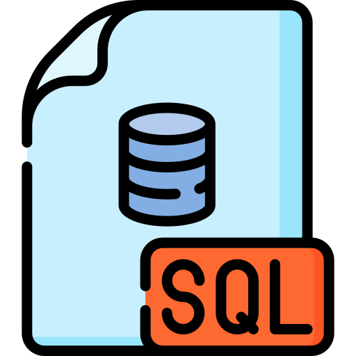

SQL es el lenguaje para administrar y consultar información de bases de datos relacionales.
El lenguaje de definición de datos puede tener algunas variaciones respecto al SMBD (Sistema Manejador de Base de Datos) que se utilice para manipularlo, sin embargo existe una codificación estándar que nos permite identificar una serie de características del lenguaje y las sentencias utilizadas en él.
La base de datos es la estructura de almacenamiento principal, la sentencia que se utiliza para su construcción es CREATE. Su sintaxis y modo de uso genérico es: CREATE DATABASE "Nombre de la Base de Datos".
Para construir las tablas que conforman las bases de datos, se utiliza la sentencia CREATE TABLE. Con ésta se crea la estructura de la tabla, lo cual permite definir las columnas que tiene y definir ciertas restricciones que deben cumplir esas columnas.
Los nombres de la tabla y columnas deben conservar las mismas características de un identificador, es decir, no espacios en blanco, de preferencia usar los nemotécnicos definidos en la organización, nombres significativos, no iniciar con números, etc.
El comando utilizado es ALTER TABLE, este comando tiene algunos atributos que nos permite realizar cambios a una tabla ya creada. Las posibles modificaciones a realizar son: adición de nuevas columnas, eliminación de columnas, cambio de tipo de dato, adición de constraints (restricciones) a las columnas previamente creadas o la eliminación de restricciones.
En esta sentencia se utilizan expresiones que determinan el tipo de cambio a incorporar, de la siguiente forma:
La sentencia DROP TABLE permite eliminar una tabla, siempre y cuando se tengan permisos sobre el objeto, no se encuentre abierta o siendo ingresada por algún usuario o si al eliminarla se infringe alguna regla. El caso más común está relacionado con las llaves foráneas, cuando el contenido de una tabla es referenciada por otra a través de las llaves foráneas.
Este lenguaje se utiliza para "manipular" los datos de una base de Datos, es decir Insertar, Borrar, Modificar y Consultar los registros de las tablas que conforman una base de Datos.
Las sentencias DML son:
La sentencia INSERT se utiliza para agregar los registros a una tabla, es decir que se agregan filas completas de datos a la tabla, previa a la inserción se realiza un proceso de verificación de las restricciones presentes en cada campo, es decir que si el campo es llave primaria, el valor de cada dato a insetar. La fila siempre es agregada al final de la tabla y el valor de cada campo debe coincidir con el tipo de dato establecido para cada columna.
Sintaxis:
La sentencia UPDATE se utiliza para realizar modificaciones sobre los datos que se encuentran en los campos de una tabla. El sistema realiza una validación de la integridad de los campos, verificando que los nuevos datos no infrijan ninguna de las restricciones asociadas a los campos. Se debe tener especial cuidado en proporcionar adecuadamente la condición que determina sobre cual o cuales de los registros deben aplicarse los cambios.
Sintaxis:
La sentencia DELETE se utiliza para borrar filas de datos de una tabla. El sistema realiza una validación de la integridad referencial antes de ejecutar la acción. Así como con la modificación se debe tener especial cuidado en proporcionar adecuadamente la condición que determine cual o cuales de los registros deben ser borrados.
Sintaxis:
Con la sentencia SELECT se visualiza la información de la base de Datos. Los datos que se presentan corresponden a una o más filas de una tabla o también a una o más filas de una o más tablas.
Sintaxis:
Las cláusulas DML son palabras clave que se utilizan para modificar o complementar las sentencias DML (SELECT, INSERT, UPDATE y DELETE). Permiten agregar precisión y control a las operaciones que se realizan sobre los datos en una base de datos relacional.
Los predicados DML son expresiones que se utilizan en las sentencias DML (SELECT, INSERT, UPDATE y DELETE) para definir condiciones que deben cumplirse para que la operación se ejecute. Son una parte fundamental del lenguaje SQL y te permiten realizar operaciones precisas y eficientes sobre los datos en una base de datos relacional.
Estos alias se utilizan para ayudar a la visualización del nombre de las columnas al momento de generar el resultado de la consulta, estos nombres son temporales, es decir que sólo se reflejan en salida, bien sea pantalla o impresión, pero no afectan los nombres que los campos tienen en la tabla. Para asignar el alias a un campo se utiliza la cláusula AS.
Sintaxis:
Esta cláusula es muy importante porque se utiliza para generar resultados basados en condiciones, ya que filtra verticalmente las filas a presentar.
Sintaxis: